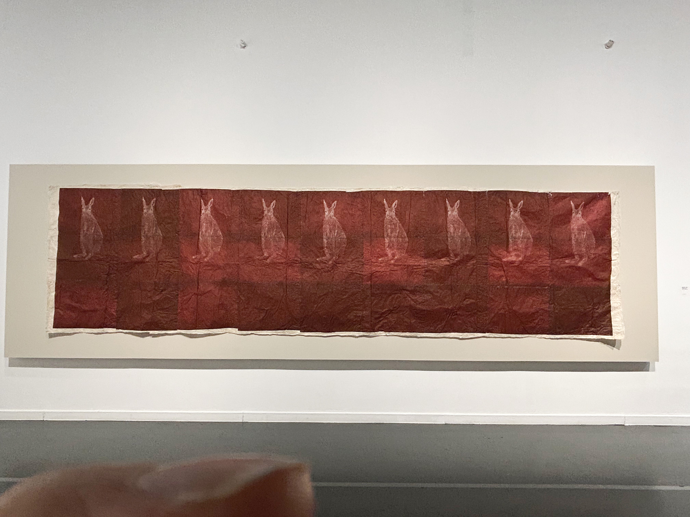
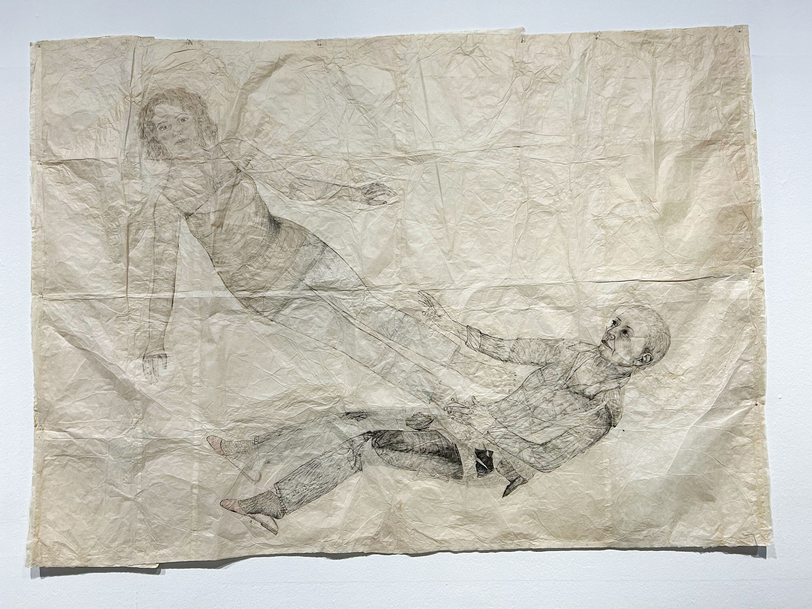
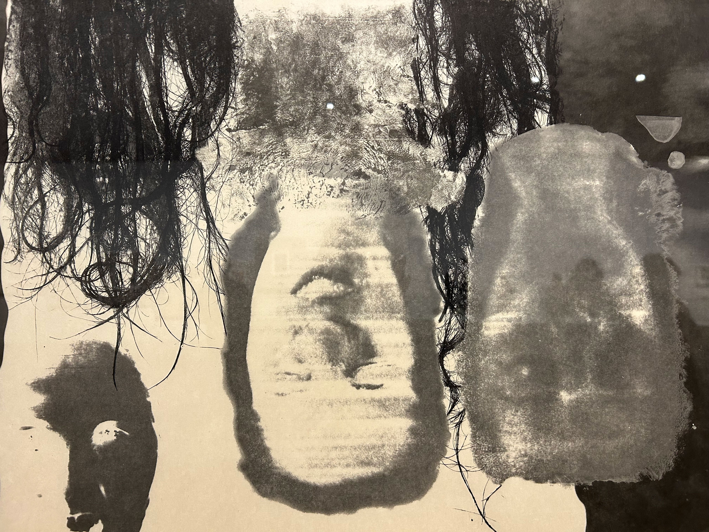

자유 낙하
<
하이-
새해의 첫 달은 벌써 지났고. 이번 겨울은 왜인지 좀 더 혹독했던 것 같아. 겨울방학도 거진 끝나가는데 뭐 재밌는 거 했는지 궁금하구나. 나는 이번에 겨울방학 즈음 시작했었던 이번 서울시립미술관에서 하는 키키 스미스의 《자유 낙하》 전시를 보고 왔어. 내가 고등학생 때 진짜 좋아하던 작가였는데, 실물로 마주할 설렘을 가지고 신나게 갔어. 생각해보면 내가 지금 끌리는 미감의 저편 어딘가의 주춧돌에 스며있는 것 같기도 해. 그게 무엇이냐 한다면 구체적으로 뭐라 말해야할지 모르겠는데, 이 글을 다 읽으면 감이 올 지도.
전시장에서 웹 이미지로만 보던 키키의 작품들을 실제로 보니까, 예상했던 모습과 전혀 달랐던 것도 있고 납작한 화면에서는 절대 알지 못할 부분을 찾아내는 맛이 있더라. 그래서 그런지 이 전시는 유독 유럽 여행 갔을 때 방문하는 거-대한 미술관을 보고 나온 기분과 비슷했어. ‘헉 이 작품은 실물이 이렇구나.’ 저 멀리서 ‘엇, 저건..책에서나 봤을!’하며 다가가서 알던 모습과 비교하는 그런 재미 있잖니. 손바닥 만한 작품인 줄 알았는데 문짝보다 컸다던가, 생각치도 못한 디테일을 발견한다던지 말이야.
예를 들어서 2층에 있던 테피스트리 작품들은 웹 이미지로만 알고 있던 터라 작은 판화 작업이라고 생각했는데, 커다랗게 줄지어 등장해서 조금 놀랐음.. 예상하지 않은 스케일이 주는 스펙타클이 있었던 것 같아. 전시는 90년대 작품부터 작년 것까지 작가가 지나온 오랜 시간을 아우르고 있었는데, 시간대별로 있기보다는 매체에 따라 느슨하게 묶여있었어. 하지만 사용한 매체와 시간대는 어느 정도 비슷하게 묶이기 마련이니까.
전시장에 들어서면 가장 먼저 보이는 작품들은 커다랗고 쭈글쭈글한 종이에 그려진 드로잉이었어. 주로 인물 구상이었는데, 아주 얇은 선으로 그려졌더라고. 납작하게 구겨진 종이에 생기는 얇은 그림자나 가는 머리카락처럼 말이야. 그 때문이지 종이의 질감이 마치 거대한 피부 같았어. 특히 나이 든 여성을 그린 작품에서는 그녀의 눈가, 목, 손등에 표현된 주름이 종이의 질감과 착 붙어서 마치 피부가 넓게 펼쳐진 듯한 모습이었어. 살이 곧 종이가 되고 종이가 곧 살이 되는 표면이었는데, 그녀의 작품들 중에서는 이렇게 촉각적으로 전달되는 경우가 많았어. 유독 이 전시에서는 자주 ‘만지고 싶다’, ‘입에 넣어보고 싶다’하는 충동이 들었던 것 같아.
전시에서 작품을 만지고 싶다는 충동은 매우 자연스러운 것이라 생각해. 전에 친구랑 ‘우리는 언제 작품을 만지고 싶다는 충동을 강하게 느낄까?’에 대해서 얘기한 적이 있는데, 먼저 알고 있는 질감과 지금 눈앞에 보이는 질감이 충돌할 때라고 생각해. 보는 것만으로 알고 있던 감각의 범위를 벗어날 때, 확인하고 싶은 마음이랄까. 입에 넣어보고 싶다는 마음과 비슷한 것 같아. 아이들이 낯선 대상을 보면 입으로 먼저 가져가는 것처럼 원초적인 감각 같은 것 말이야. 다음으로는 솜털 가득한 아기의 볼을 만지고 싶다거나, 너무 탐스러운(?) 돌에는 사람들의 손때가 많이 묻어있는 것처럼 ‘아는 맛이 무서운’ 충동. 그래서 더 만지고 싶은 마음이 있지.
근데 이 전시에서 느꼈던 감각은 둘 다 였던 것 같아. 알고 있는 신체의 촉감, 털이라던가 머리카락, 피부 등이 종이 자체 혹은 인쇄나 드로잉으로 내게 너무 가까이 들이밀어졌을 때의 생경함. 사실 어떤 감각을 이건 이거 저건 저거 나누는 게 별 의미가 없기도 해. 미술 작품이라는 게 감각적으로 딱 분리할 수 있는 건 아니니까.
(근데 그 말도 안 되는 계란 노른자 봤니)
<진저>, 2000라는 작품 볼 때는 기분이 진짜 이상했다? 작가가 키우던 고양이가 세상을 떠나자 그 시체를 동판 위에 올려 따라 그렸다고 해. 한 올 한 올 그려진 수천 수만 가닥의 털에서 깊은 애착과 그걸 넘어선 강박이 보였어. 사랑했던 고양이를 충실히 떠나보내는 애도의 방식인 동시에, 죽은 포즈 그대로 박제한 것이 서늘하면서 좋았어.. 질감을 사실적으로 표현한 고양이 삽화로 남지 않은 이유라고 생각해.

유사한 ‘obsession’이 보였던 작품은 <붉은 토끼>, 1996였어. 붉은색을 미묘하게 다르게 하여 물들인 종이 여러 개를 길에 이어 붙였는데, 종이의 크기는 모두 같아. 반복적으로 나열된 붉은색은 생리혈의 색과 아주 비슷하다고 생각했어. 그리고 그 위에 얇고 하얀 선으로 표현된 토끼 여러 마리가 있는데, 동일하게 찍어낸 듯 일렬로 줄지어 있었어. 조금씩 다른 붉은색처럼 토끼의 묘사도 조금씩 다를까 하고 들여다 봤는데 차이를 발견하진 못했음. 사실 토끼를 보면, 어렸을 때 접했던 만화나 영화, 매체에서 귀엽고 뽀송한 토끼가 무섭게 공격하는 괴물로 변해버리는 장면을 본 기억이 종종 떠올라. 특히 빨간 눈의 하얀 토끼. 그래서 그런지 이 작품을 볼 때 내 생활과 친숙한 걸 본다는 기분과 동시에 일종의 공포감이 있었다고나 해야 할까.
생각해보니 작고 말랑한 토끼가 괴물, 야수가 되는 이야기는 키키 스미스의 몇 작품이 취하는 방식과 비슷한 것 같네. 사진 작업에서 자신이 빨간 망토 속 늑대가 된다던가, 작가 본인의 얼굴에 털을 한가득 그린다던가, 머리를 길게 풀어헤친 채 렌즈를 향해 맹렬하게 달려든다던가. 혹은 반대로 늑대를 뚫고 나오기도 하지. 수동적이고(이라고 믿어왔던) 작은(다고 믿어왔던) 몸에서 샤우팅하는 공격태세를 갖추기. 90년대 여성주의 미술에서 드러나는 특징들 중 하나라고 할 수 있지. 지금은 익숙한 방식이라 하더라도 그 태도는 유효한 것 같아. 여성이 여성이라는 틀을 벗어나는 동시에 자기의 몸을 온전히 끌어안는 방식이었다고 생각해. 혐오로 찍힌 몸을 되려 활짝 펼치고 나와 스스로 괴물이 되기도 했지. 또는 아주 강박적인 디테일과 수없는 반복을 만들어내기도 했는데, 발화의 기회를 얻지 못했던 자들이 하는 꾹꾹 눌러담긴 말과 같다고 생각해. 프란츠 파농이 쓴 책 <검은 피부, 하얀 가면>에서 정말 좋아하는 구절이 있는데, 쓰다 보니 떠올랐어.

이어서 <나는 들어갈 공간이 충분히 있도록 나 자신을 비워 뒀다>, 2000에 대해 이야기해볼 수 있겠다. 위에서 말했었는데, 사람 피부같이 주름진 종이 위에 그려진 드로잉들 중 하나야. 중년쯤 되어 보이는 여성이 허리를 조금 세워 누워 있고 그 위에 비교적 젊은 여성이 떠 있어. 그녀는 누워 있는 중년 여성의 배 위를 중력의 영향 없이 밟고 서 있는 것처럼도 보이고, 혹은 ‘혼’이 유체 이탈하듯 떠 있는 것처럼도 보여. 신체, 피부로서 인지된 종이 위에, 물리적으로 잡을 수 없는 ‘혼’이자 잡힐 듯 떠 있는 몸이 주는 양가적인 힘이 있었어. 한 화면에서 지속해 스스로를 붙잡고 놓고, 붙잡고 놓는 작용이 일어난다고나 해야 할까. 물질과 그 위에 그려진 것이 서로 연료가 되어 순환하는 모습으로 다가왔어.
전시장 안쪽으로 들어가면 흑백 판화 작업이 한 벽면을 채우고 있어. 흑백이라는 점과 작품들에 표현된 인물의 모습이나 화면의 구도가 독일 표현주의 영화가 연상되더라. 작품 대부분에서 작가 본인의 머리카락이 등장해. 얼마 전에 재밌게 보았던 줄리아 뒤쿠르노 감독의 영화 <로우>, 2016의 한 장면이 떠올랐어.
카니발리즘에 관한 영화인데, 자신의 식인 본능을 알아버린 소녀가 불안감으로 뜯어먹은 자신의 머리카락을 게워내는 장면이야. 속이 울렁거리면서도 실눈 뜨고 계속 봤었음.. 축축한 머리카락 뭉치가 입에서 줄줄이 나오는데,
그것이 키키의 작품에 반복적으로 등장하는 머리카락과 비슷해. 그리고 영화와 작품에 어떤 공유된 감정 같은 것을 읽었어. 자신을 몸을 불안하게 마주하면서도 끊임없이 욕망하는 상태 같은 거? 일종의 집착이 되기도 하고. 있잖아 공포, 스릴러 영화에서 분위기를 고조시키기 위해 갑자기 길게 엉킨 머리카락 뭉치를 발견하거나, 툭 떨어지거나 하는 장면이 쓰이곤 하잖니. 사람에게 붙어있지 않는 머리카락이 주는, 특히 길게 엉킨 머리카락이 주는 메스꺼운 효과가 있어. 어쨌거나 만들어진 효과지만 말이야. 그리고 키키스미스는 그런 효과와 집착의 감상을 작품에서 적극적으로 활용해.
전시를 다 보고 시간이 지난 뒤에, 90년대 여성 작가들의 작품에 등장했던 끝없는 강박과 집착의 언어가 지금 시점 어떤 효력을 가질까 생각해봤어. 전시장에서 느꼈던 감각은 지금도 유효하다고 생각했거든. 그녀의 언어는 내가 나의 몸을 감각하는 방식과 많은 부분 맞닿아 있다 느꼈어. 감각하는 방식에 있어 어떤 공감대를 이루거나 일반성을 가질 수는 있겠지만 모든 사람에게는 각자의 역사를 가진 몸이 있잖아. 같은 걸 보고도 정말 다른 걸 말하는 것처럼 말이야. 그게 차이를 지닌 ‘효력’의 시작이겠지. 개별 역사를 가지고 가시화되지 않은 몸이 물리적인 형태로 존재하게 될 때, ‘이러한 몸이 있다(있어왔다)’라고 말할 수 있는 것 같아. 예를 들어보자면, 근래에 책을 하나 읽었어. 아니 에르노의 <사건>이라는 책인데, 작가 본인이 60년대에 경험했던 낙태 경험을 쓴 자전적 소설이야. 작가가 겪은 사건은 그 일을 써 냄으로써 읽을 수 있는, 정말로 있었던 사건이 돼. 그리고 작업을 통해 무언가를 만들어내는 일은 같은 방식으로 이루어진다고 생각해. 가시화되지 않던 몸이 발화할 수 있는 자기 몸을 가지게 되는 순간 같은 거 말이야. 그리고 그게 내가 가진 일말의 믿음이라면 믿음이 아닐까.
시급하지만 필수는 아닌 문제? : 작업·발표·태도
재훈
2023.03.07